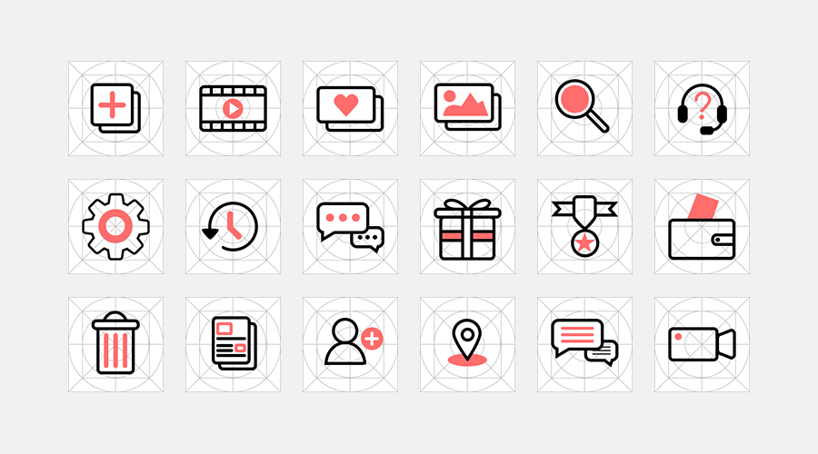

About Me
1st Semester
2nd Semester
3rd Semester

아이콘 디자인
중국의 웨이보라는 sns 앱을 분석한 결과 한 앱 내에서 수 많은 디자인의 아이콘들이 쓰이고 있었다.
세련되어 보이지 않게 하는 큰 원인인데, 그걸 보완하는 아이콘들을 새로 리뉴얼해보았다.
전부 6의 굵기로 스트로크를 통일 시키고 포인트 색으로 강조할 부분은 강조하는 식으로 디자인했고,
전체적으로 펼쳐놓고 봤을 때 통일감이 느껴지는 만족스러운 결과가 나왔다.